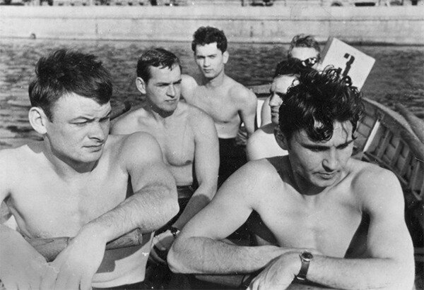
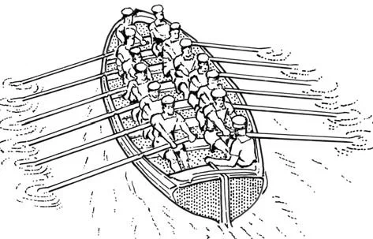

И когда наступило утро, и засияло светом, и заблистало, у царя расправилась грудь, и он стал ожидать конца рассказа и говорил про себя: «Клянусь Аллахом, я не убью ее, пока не услышу остаток ее рассказа».
Тысяча и одна ночь

Уставшие гребцы нашей ротной «шестерки» ощущают себя гребцами моноремы (монеры) или биремы (диеры)?
Рисунок ниже показывает обычное размещение гребцов: на каждой банке два гребца – гребец правого борта и гребец левого борта.

Была ли для древних греков эта шлюпка монерой или диерой ?
Особенно острые дебаты развернулись по поводу триремы (по-гречески триеры): находилось ли там в поперечном сечении шесть гребцов, или только три?
Самое интересное, что на дебаты по этому вопросу накладывается специфика каждого языка. В нашем языке мы следуем самой древней греческой классификации и называем показанную на фотографии шлюпку «шестивесельным ялом» или просто «шестеркой». Англичане же, склонные вообще запутывать все самые простые вещи («Англичане не могут не исковеркать слова.» Гончаров, Фрегат «Паллада»), называют размещение гребцов шлюпки на втором рисунке «двухрядным» («double banked», Oxford English Dictionary), хотя практически все авторы, в том числе и англоязычные, игнорируют этот словарь и называют такое размещение гребцов однорядным («single banked»).
Не вносят ясности даже самые маститые исследователи античных кораблей, такие, как Дж.С. Моррисон. В капитальном труде «Греческие гребные корабли» (Morrison, J. S. and Williams, R. T., Greek Oared Ships. 1968,Cambridge) Моррисон так определяет триеры, тетреры и пентеры (с.339):
trieres, -eis: = trireme, a ship in which there were three oarsmen to each unitary division or “room”, called in Latin “interscalmium”, the distance of about three feet between one thole pin and the next at one level. Tetreres, penteres ships with four and five men to this division, probably rowing more than one man to each oar.
“Unitary division or “room”, called in Latin “interscalmium”» – это расстояние между двумя соседними уключинами в одном уровне, составляющее около 90 см. Так вот, Моррисон помещает в этот интерскалмиум трех гребцов для триеры. По рисункам, содержащимся в этой же работе, видно, что речь идет о трех гребцах на один борт, т.е. всего в этом пространстве, «room», находится шесть человек.
Однако в работах других исследователей этой темы (A. Tilley и другие) содержится предположение, что число, входящее в состав различных греческих военных «полиер» отражает ОБЩЕЕ ЧИСЛО гребцов в поперечном сечении (или unitary division или ‘room’ или interscalmium), а не их число на один борт.
В более поздней работе Моррисона ( J.S. Morrison. Hemiolia, trihemiolia IJNA (1980) 9.2, 121-126) приводится более взвешенное определение греческих полиер: Греческие названия типов кораблей trieres, tetreres, penteres, hexeres следует объяснять как обозначение кораблей, имеющих три, четыре, пять или шесть рядов гребцов на каждом борту корабля, независимо от числа уровней, на которых они сидят. Триеры естественно приводятся в движение гребцами на трех уровнях, тетреры и гексеры вероятно веслами, за каждым из которых находится по два гребца и которые расположены на двух и трех уровнях соответственно; что касается пентер, то они вероятно приводились в движение веслами с двумя гребцами на каждом на двух уровней и веслом с одним гребцом на третьем уровне.
Вот так-то. Специалисты по комбинаторике отдыхают.
Но если бы все этим и ограничилось. Однако во второй половине IV века до н.э. в письменных документах эпохи, заполненных озабоченностью авторов в связи с ростом пиратства, стали появляться вообще «горбатые» названия типов кораблей, используемых пиратами - hemiolia and trihemiolia – у которых численное значение, входящее в эти названия, имело дробный характер: 1½ и 3х1½ соответственно. Научное сообщество первоначально зашло в тупик, пытаясь объяснить эту прихоть пиратов. Но нет таких крепостей, которых не брали бы яйцеголовые мудрецы. Как это им удалось сделать, посмотрим в следующий раз.
Пусть Шахрияр подождет!